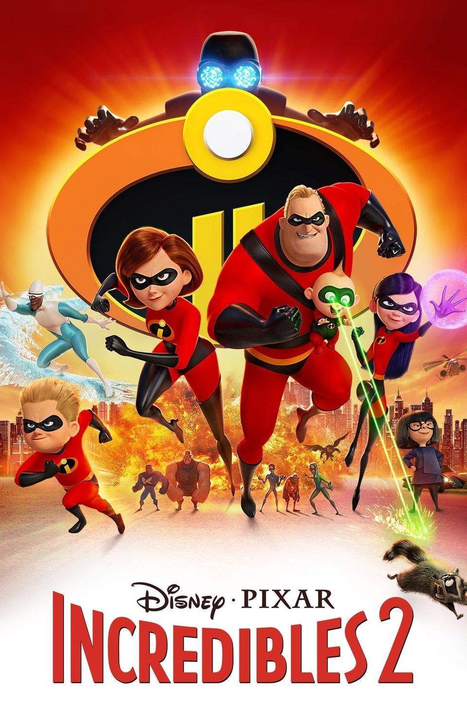

My Favorite Movies
MY FAVORITE MOVIES OF 2018
1. Deadpool 2
Wisecracking mercenary Deadpool meets Russell, an angry teenage mutant who lives at an orphanage. When Russell becomes the target of Cable -- a genetically enhanced soldier from the future -- Deadpool realizes that he'll need some help saving the boy from such a superior enemy. He soon joins forces with Bedlam, Shatterstar, Domino and other powerful mutants to protect young Russell from Cable and his advanced weaponry.
2. Black Panther
After the death of his father, T'Challa returns home to the African nation of Wakanda to take his rightful place as king. When a powerful enemy suddenly reappears, T'Challa's mettle as king -- and as Black Panther -- gets tested when he's drawn into a conflict that puts the fate of Wakanda and the entire world at risk. Faced with treachery and danger, the young king must rally his allies and release the full power of Black Panther to defeat his foes and secure the safety of his people.
3. Ready Player One
Eighteen-year-old Wade Watts is one of these people, and he has a mission: to find an Easter egg hidden inside the OASIS by its wackadoodle creator, James Halliday. In order to get to the egg, a player must first find three keys and unlock three gates.
4. Upgrade
A brutal mugging leaves Grey Trace paralyzed in the hospital and his beloved wife dead. A billionaire inventor soon offers Trace a cure -- an artificial intelligence implant called STEM that will enhance his body. Now able to walk, Grey finds that he also has superhuman strength and agility -- skills he uses to seek revenge against the thugs who destroyed his life.

5. Incredibles 2
Everyone’s favorite family of superheroes is back in “Incredibles 2” – but this time Helen (voice of Holly Hunter) is in the spotlight, leaving Bob (voice of Craig T. Nelson) at home with Violet (voice of Sarah Vowell) and Dash (voice of Huck Milner) to navigate the day-to-day heroics of “normal” life. It’s a tough transistion for everyone, made tougher by the fact that the family is still unaware of baby Jack-Jack’s emerging superpowers. When a new villain hatches a brilliant and dangerous plot, the family and Frozone (voice of Samuel L. Jackson) must find a way to work together again—which is easier said than done, even when they’re all Incredible.